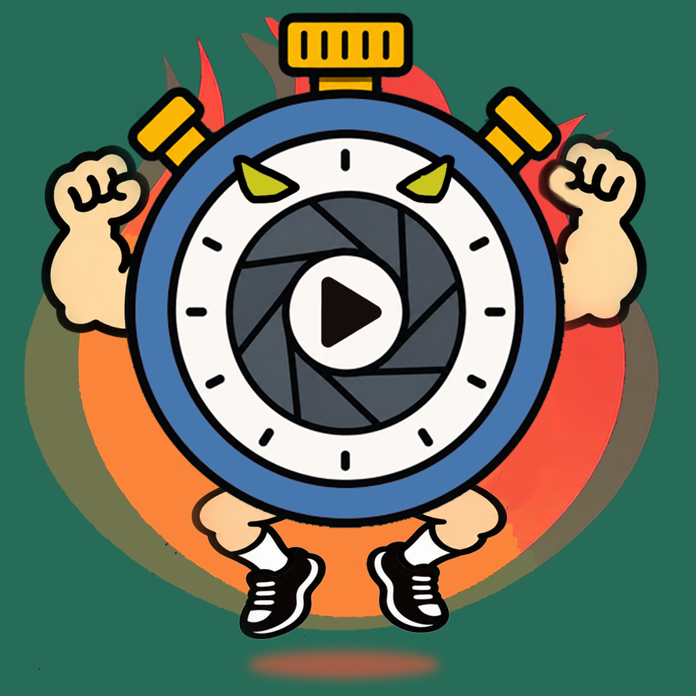

スポーツのパフォーマンスや下半身の瞬発力を示す重要な指標である「垂直跳び（ジャンプ力）」。バレーボールのアタック、バスケットボールのリバウンドやダンク、陸上競技の瞬発力など、多くの競技でジャンプ力は試合の行方を左右します。
「自分のジャンプ力は平均と比べてどうなのだろう？」と疑問に思う方も多いのではないでしょうか。この記事では、文部科学省の体力・運動能力調査などの統計データをもとに、年齢別・男女別の垂直跳びの平均値を詳しく解説します。また、正確な測定方法とジャンプ力を高めるためのトレーニング方法もご紹介します。
目次
1. 【年齢別・男女別】垂直跳びの公的平均値データ（文部科学省・スポーツ庁調査）
日本人の垂直跳びの平均値は、中学生から高校生にかけて大きく向上し、男子は20代前半、女子は10代後半でピークを迎える傾向があります。以下は、スポーツ庁（旧文部科学省）「体力・運動能力調査」等の大規模統計に基づく標準的な平均データです。
中学生・高校生・大学生の平均値
学生における年齢別の垂直跳びの平均データは以下の通りです。
| 学年（年齢） | 男子 平均 (cm) | 女子 平均 (cm) | 男子 上位10% (cm) | 女子 上位10% (cm) |
|---|---|---|---|---|
| 中学1年生 (12歳) | 約 40.5 | 約 34.0 | 52.0以上 | 42.0以上 |
| 中学2年生 (13歳) | 約 46.0 | 約 36.5 | 58.0以上 | 45.0以上 |
| 中学3年生 (14歳) | 約 51.5 | 約 38.0 | 64.0以上 | 47.5以上 |
| 高校1年生 (15歳) | 約 55.0 | 約 39.5 | 68.0以上 | 49.0以上 |
| 高校2年生 (16歳) | 約 57.5 | 約 40.5 | 70.0以上 | 50.0以上 |
| 高校3年生 (17歳) | 約 59.0 | 約 41.0 | 72.0以上 | 51.0以上 |
| 大学生・一般 (18〜22歳) | 約 60.0〜62.0 | 約 41.5〜43.0 | 74.0以上 | 53.0以上 |
大人（成人男性・女性）の年代別平均値
一般的な成人の平均値は、男性で約 55cm〜60cm、女性で約 35cm〜40cm程度とされています。運動習慣がない人の場合、20代以降は加齢に伴う速筋線維（Type II線維）の選択的萎縮により、10年ごとに約3〜5cmずつ低下していくことが知られています。
2. 【競技別】トップアスリートの平均ジャンプ力比較（バレー・バスケ・陸上）
一般人の平均に対して、高い跳躍力が求められるスポーツ選手（アスリート）の数値は桁違いです。各競技のプロ・実業団選手の平均値と最高到達点目安は以下の通りです。
| 競技種目 | 男子トップ平均 (cm) | 女子トップ平均 (cm) | 特徴・求められる要素 |
|---|---|---|---|
| バレーボール | 80 〜 100 cm | 60 〜 75 cm | 助走からのアプローチジャンプ。最高到達点は男子345cm以上、女子310cm以上。 |
| バスケットボール (Bリーグ/NBA) | 75 〜 95 cm | 55 〜 70 cm | リバウンドでの両足垂直跳び、ランニングジャンプでのダンク。NBA屈指の跳躍者は110cm超。 |
| 陸上競技（走高跳・三段跳） | 85 〜 105 cm | 65 〜 80 cm | 助走の水平速度を強靭な足首・膝で上方向の運動量に変換するSSC能力。 |
| サッカー（FW/GK） | 65 〜 78 cm | 48 〜 60 cm | 相手選手と競り合いながらヘディングで打ち勝つコンタクト下での跳躍力。 |
3. 垂直跳びを正確に測定する方法（滞空時間測定の物理的根拠と動画解説）
垂直跳びの測定法には、伝統的な「壁タッチ（チョーク）法」と、近年のスポーツ科学で標準となっている「滞空時間法（フライトタイム法）」の2種類があります。
| 比較項目 | チョーク壁タッチ法（旧来） | 滞空時間測定法（スマホ動画解析） |
|---|---|---|
| 測定原理 | 立位指先高とジャンプ最高タッチ高の差 | 離地から着地までの滞空時間（t）から物理計算 |
| 誤差要因 | 肩の入れ方、チョークの付き方、壁への接近角 | なし（純粋な重力加速度と滞空時間から一意に算出） |
| 安全性 | 壁に激突・擦り傷のリスクあり | 広い場所で安全にジャンプ可能 |
| フォーム分析 | 不可 | 動画からスロー再生・骨格解析が可能 |
滞空時間から高さを導く物理計算式
地球上の重力加速度（\(g = 9.80665\text{ m/s}^2\)）において、空中での放物運動は数学的に一意に定まります。スポーツ生理学の世界的権威であるBosco博士らの研究（Bosco et al., 1983）に基づき、以下の公式で跳躍高（\(h\)）が厳密に算出されます。
例: 滞空時間 \(t = 0.60\text{秒}\) の場合、\(h = \frac{1}{8} \times 9.80665 \times (0.60)^2 \approx 0.441\text{m}\)（44.1cm）
動画で見る！垂直跳びの測定手順
iPhoneのカメラでスローモーション動画を撮影し、アプリで離地・着地を指定してミリ秒単位で垂直跳びを測定する実際の手順です。

4. 科学的エビデンスに基づくジャンプ力向上トレーニング（論文解説付き）
ジャンプ力は、物理的には「筋力（力: Force）」と「収縮速度（速度: Velocity）」の掛け合わせである「パワー（\(P = F \times v\)）」で決まります。ジャンプ力を向上させるためには、最大筋力向上とSSC（反発力）強化の両面をアプローチする必要があります。
① 最大筋力を高めるウェイトトレーニング（Squat & Deadlift）
Suchomelら（2016）の大規模システマティックレビューによると、「バックスクワットの1RMが体重の2倍以上のアスリートは、体重の1.5倍未満のアスリートと比較して、垂直跳びおよびスプリントの加速能力が極めて有意に高い」ことが示されています。また、Sanderら（2014）の2年間にわたる追跡研究でも、スクワット筋力の向上がジャンプ高の向上と正の相関を示しました。
- バーベル・バックスクワット: 大臀筋と大腿四頭筋を動員する最重要種目。体重の1.5〜2.0倍を1RMのターゲットとします。
- トラップバー・デッドリフト: 股関節の爆発的な伸展（ヒップヒンジ）を鍛え、テイクオフ時の強力な推進力を生み出します。
② 反発速度を高めるプライオメトリクス（SSCトレーニング）
Markovic（2007）のメタアナリシス（計26研究・784名を対象）では、「プライオメトリクストレーニングを実施したグループは、垂直跳びが平均4.7〜8.7cm（+7.5〜14%）有意に向上した」と報告されています。
筋肉が引き伸ばされた直後に急激に収縮する反射作用「ストレッチ・ショートニング・サイクル（SSC）」を鍛えることで、地面接地時間を0.1〜0.2秒に短縮し、反発エネルギーを最大限に跳躍力へと変換します。
- デプスジャンプ（Depth Jump）: 30〜45cmの台から飛び降り、着地した瞬間に「床が熱いかのように」即座に真上へ跳び上がる。接地時間の短縮を意識。
- アンクルホップ（連続足首ジャンプ）: 膝の曲げを最小限に抑え、アキレス腱の弾性エネルギーを使ってテンポよく連続跳躍する。
- ボックスジャンプ: 60〜90cmのボックスへ全力で跳び乗る。着地衝撃を抑えつつ、最大出力の跳躍を反復する。
| トレーニング種別 | 代表的種目 | 科学的推奨セット・レップ | 狙いとする適応 |
|---|---|---|---|
| 最大筋力（Force） | バックスクワット、デッドリフト | 3〜5回 × 3〜5セット (85% 1RM〜) | 運動単位の動員（神経系）、筋横断面積の増大 |
| パワー・爆発力（Power） | クリーン、ジャンプスクワット (30% 1RM) | 3〜5回 × 3〜4セット (爆発的挙上) | RFD（力の立ち上がり速度）の最大化 |
| 弾性反発（SSC / Velocity） | デプスジャンプ、アンクルホップ | 4〜6回 × 3〜4セット (接地時間0.2秒未満) | アキレス腱の剛性（Stiffness）、伸張反射の強化 |
5. まとめ
日本人の大人（成人）の垂直跳び平均値は、男性が約 55〜60cm、女性が約 35〜40cm です。もし平均値を超えたい、あるいは自身のスポーツでの目標値をクリアしたいのであれば、単に飛び跳ねるだけでなく、正しい「最大筋力強化（スクワット）」と「瞬発力トレーニング（プライオメトリクス）」を科学的に組み合わせていくことが大切です。
まずはご自身の現在のジャンプ力とフォームを、怪我なく正確に測れる「formX」アプリで可視化することからスタートしてみましょう！
6. 参考文献・学術論文（References）
-
Bosco, C., Luhtanen, P., & Komi, P. V. (1983). A simple method for measurement of mechanical power in jumping. European Journal of Applied Physiology and Occupational Physiology, 50(2), 273-282.
[PubMed: 6684033] 滞空時間から跳躍高および力学的パワーを算出する計測法の妥当性を証明した原著論文。 -
Suchomel, T. J., Nimphius, S., & Stone, M. H. (2016). The Importance of Muscular Strength in Athletic Performance. Sports Medicine, 46(10), 1419-1449.
[PubMed: 26838985] アスリートにおける下半身最大筋力（スクワット）と垂直跳び・スプリント性能の相関関係を示した包括的レビュー。 -
Markovic, G. (2007). Does plyometric training improve vertical jump height? A meta-analytical review. British Journal of Sports Medicine, 41(6), 349-355.
[PubMed: 17347316] プライオメトリクストレーニングが垂直跳び（CMJおよびSJ）に及ぼす改善効果を検証したメタアナリシス。 -
Sander, A., Keiner, M., Wirth, K., & Schmidtbleicher, D. (2014). Influence of a sprint-specific strength training on change of direction ability in elite young soccer players. Journal of Strength and Conditioning Research, 28(5), 1207-1214.
[PubMed: 24126898] 長期筋力トレーニングが跳躍高および方向転換能力に与える影響の追跡研究。 -
スポーツ庁 (Japan Sports Agency). 令和4年度・令和5年度 体力・運動能力調査報告書.
[公式統計データ] 日本人の年齢別・性別の垂直跳びおよび基礎運動能力の全国平均値。